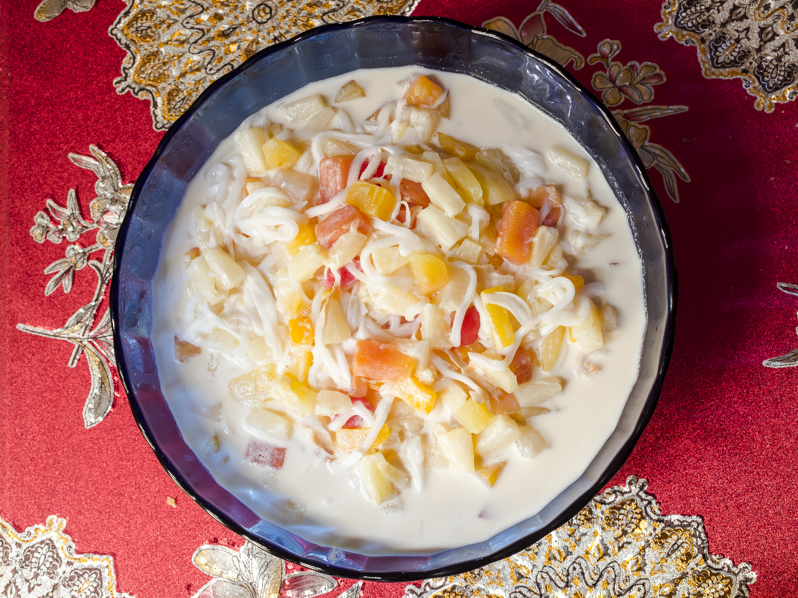

Fruit Salad Recipe

Photo by MDV Edwards on iStock
Description
The Filipino version of a fruit salad dessert is made with various fruits and gels mixed with a sweet cream. It is best when served chilled.
Ingredients
- 1 30 oz mixed fruit cocktail in heavy syrup
- 1 cup shredded young coconut (young buko)
- 1 12 oz bottle sugar palm fruit (kaong)
- 1 12 oz bottle coconut gel (nata de coco)
- 1/2 cup Gouda or white American cheese, cubed
- 1 8 oz can table cream, such as Nestle cream or all-purpose cream
- 1/2 14 oz can sweetened condensed milk
Steps
- Strain the fruit cocktail and young coconut. Set aside.
In a separate bowl, whisk the table cream to remove any lumps. Then combine it with condensed milk and mix well.
- Add the fruit cocktail, young coconut, sugar palm fruit, coconut gel, and cubed cheese to the cream mixture and mix well.
- Cover and chill for at least 3 to 4 hours before serving.
Home